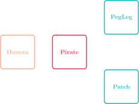

Jed Rembold
April 2, 2021
The code block to the right starts defining a class. Only 1 of the below options for defining an increment method will work. Which one?
class BestCounter:
def __init__(self, start):
self.counter = startdef increment(self, value):
counter += valuedef increment(value):
counter += self.valuedef increment(self, value):
self.counter += self.valuedef increment(self, value):
self.counter += valuesalary might look like:def get_salary(self):
return self.salary
def set_salary(self, new_salary):
self.salary = new_salary>>> C = Employee('Bob', 'clerk', 15)
>>> print(C)
<__main__.Employee object at 0x7f942ba13550>__str__ method to specify how your object should be printedGPoint class in PGL is a simple class that showcases private attributes and a __str__ methodclass GPoint:
def __init__(self, x=0.0, y=0.0):
""" Initializes the GPoint with the specified coordinate. """
self._x = x
self._y = y
def get_x(self):
""" Returns the x-component of the point. """
return self._x
def get_y(self):
""" Returns the y-component of the point. """
return self._y
def __str__(self):
return "(" + str(self._x) + ", " + str(self._y) + ")"from pgl import GWindow, GPoint, GLine
PEG_SEP = 10
N_ACROSS = 50
N_DOWN = 32
def create_pegs():
pegs = []
for i in range(N_ACROSS):
pegs.append(GPoint(PEG_SEP * i, 0))
for j in range(N_DOWN):
pegs.append(GPoint(N_ACROSS * PEG_SEP, j * PEG_SEP))
for i in range(N_ACROSS, 0, -1):
pegs.append(GPoint(PEG_SEP * i, PEG_SEP * N_DOWN))
for j in range(N_DOWN, 0, -1):
pegs.append(GPoint(0, j * PEG_SEP))
return pegs
def yarn_pattern(delta, color="red"):
pegs = create_pegs()
current_index = 0
next_index = -1
while current_index != 0 or next_index == -1:
next_index = (current_index + delta) % len(pegs)
p_start = pegs[current_index]
p_end = pegs[next_index]
line = GLine(p_start.get_x(), p_start.get_y(),
p_end.get_x(), p_end.get_y())
line.set_color(color)
gw.add(line)
current_index = next_index
gw = GWindow(N_ACROSS * PEG_SEP, N_DOWN * PEG_SEP)
yarn_pattern(122)
yarn_pattern(321, "blue")
yarn_pattern(921, "green")GObject Hierarchy
class subclass(superclass):
def __init__(self, parameters):
superclass.__init__(self, any_relevant_parameters)
# Rest of subclass initialization
class Human:
def __init__(self, name, age):
self.name = name
self.age = age
self.legs = 2
def __str__(self):
return f'Human({self.name},{self.age})'
def agree(self):
print('Sure!')
class Pirate(Human):
def agree(self):
print("Aye matey!")
def __str__(self):
return f'Pirate({self.name},{self.age})'
class Pegleg(Pirate):
def __init__(self, name, age):
Pirate.__init__(self, name, age)
self.legs = 1
def __repr__(self):
return f'Pegleg({self.name},{self.age})'
class Patch(Pirate):
def __init__(self, age):
Pirate.__init__(self, name, age)
self.eyes = 1
def __repr__(self):
return f'Patch({self.name}, {self.age})'
Pizza class with various subclasses of pizza, like Pepperoni or Hawaiian.